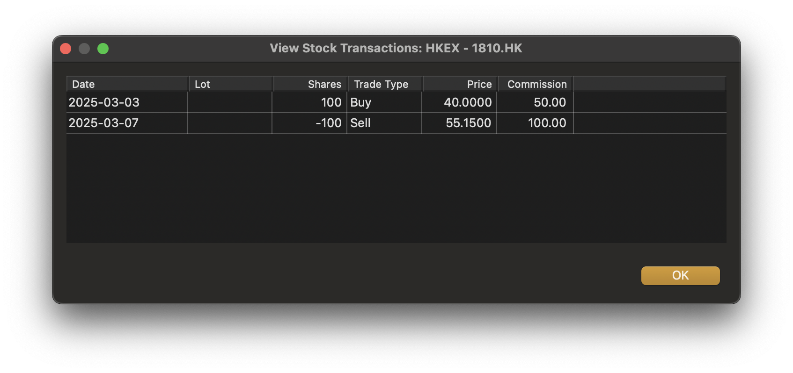

The terms Stocks and Shares generally mean the same thing but depending on how we use these terms, could mean something different. Here we refer to Stocks as companies, and Shares as units of value within the company. Generally we would obtain Stocks via a Stock Broker and purchase or sell shares in the company.
Initializing Stocks and Shares is initially a two stage process.
Any subsequent share transactions are recorded under the company in the Stock Portfolio view.
Any transaction associated with our cash accounts is settled through the Investment Account’s Cash Ledger.
In order to use Stocks and Shares in MMEX, we need to create an account of type: Investment.
The name for this account would generally be the name of the stock exchange or Stock
Broker. In our example we have selected the stock exchange being called
HKEX
.
This account would appear in the Navigator under the heading Stock Portfolios. When we expand the Stock Portfolios branch in the Navigator, we would see our newly created Stock Portfolio(Investment) account.
Selecting our new account HKEX
opens the view: Stock
Portfolio: HKEX. In this view we can now add the stocks that
we own.
We refer to Stocks as the companies that we have purchased shares.
Let us say that we purchase shares in two companies from out stock
exchange HKEX
, we would create new entries in the stock
portfolio view for our companies.
As an initial entry for each company we would supply the following:
APCis the Stock Exchange code, and
AXrepresents the Stock Exchange where you can obtain the current share value information.
a recommended way is to add a new LOT. Purchase or sale of shares is achieved by accessing the stock entry in the Stock Portfolio view and adjusting trade.
Sale of shares is achieved by accessing the stock entry in the Stock Portfolio view and adjusting trade.
Our Stock Portfolio Account now displays a summary of the Stocks we have.
Companies Alpha Corp and Beta Corp maintain their accounts with Yahoo Finance. Here we have hidden various headings as these become meaningless in this view.
Note: Initial share price is not listed in this view. This is because the share price becomes meaningless in a summary view as each purchase will generally have a different share price.
When we have added shares to our account we can see the associated share transactions using the View Transactions
Accessing our investment account, we can add ordinary transactions to it